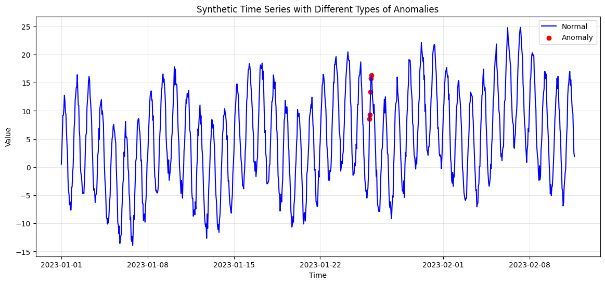
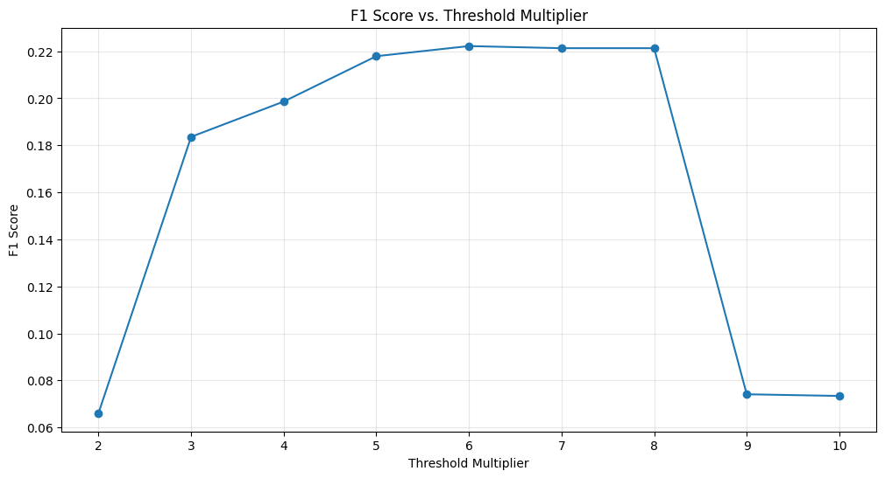

Name(s): Carmel Gafa Date: 20.05.2025
Instructions
Work individually or in pairs. Answer concisely (bullet points are fine). Save this file (or export to PDF) and email it to the instructor by 18:00 tomorrow. Feel free to reference code, figures, or metrics from your notebook runs.
Let us start by rephrasing the characteristics of contextual anomalies, that is a data point appears normal when considered alone (i.e. its value isn't extreme),but is anomalous when considered in the context of its temporal sequence or neighboring points.
The generate_synthetic_data function contained a specific section that generated a contextual anomaly, however a couple of issues were noted:
In order to facilitate the process, point and collective anomalies were temporary commented out to visualize the contextual anomaly only, obtaining the following figure:

The calculate_metrics function was modified slightly to include a confusion matrix. The function yielded the following results:
| Method | Accuracy | Precision | Recall | F1 Score | True Positives (TP) |
|---|---|---|---|---|---|
| Moving Window | 0.9950 | 0.0000 | 0.0 | 0.0000 | 0 |
| ARIMA | 0.8740 | 0.0081 | 0.2 | 0.0156 | 1 |
| Feedforward NN | 0.9908 | 0.0000 | 0.0 | 0.0000 | 1 |
| LSTM | 0.9867 | 0.1000 | 0.2 | 0.1333 | 5 |
| LSTM Autoencoder | 0.9120 | 0.0538 | 1.0 | 0.1020 | 5 |
This shows that LSTM and LSTM autoencoder model do capture all the anomalies correctly, but they also identify a considerable number of normal data points as anomalies.
Increasing the amplitude of the anomalies back to 15 does impact the performance models;
| Method | Accuracy | Precision | Recall | F1 Score | True Positives (TP) |
|---|---|---|---|---|---|
| Moving Window | 0.9950 | 0.0000 | 0.0 | 0.0000 | 0 |
| ARIMA | 0.9010 | 0.0104 | 0.2 | 0.0198 | 1 |
| Feedforward NN | 0.9990 | 0.8333 | 1.0 | 0.9091 | 5 |
| LSTM | 0.9959 | 0.5556 | 1.0 | 0.7143 | 5 |
| LSTM Autoencoder | 0.8060 | 0.0251 | 1.0 | 0.0490 | 5 |
Contextual anomalies represent a challenge in data analysis because they are harder to find than point anomalies. This difficulty comes from traditional statistical methods often struggle with patterns that depend on context. On the other hand, neural networks can be overly sensitive to changes when they do not have the right temporal context. Understanding these differences is important to create effective detection strategies in various applications.
Moving Window missed contextual patterns entirely.
ARIMA managed to capture some temporal structure and
NN resulted in higher TP but many FPs, meaning the model is overly sensitive to patterns.
The LSTM model excelled with high recall and moderate precision, effectively identifying key patterns over time. Its design helps it manage information for understanding long-term trends. However, if the training data lacks diverse behaviors, it may misidentify normal variations as issues, resulting in false positives..
The LSTM Autoencoder successfully identifies most anomalies but struggles with precision, meaning it often raises false alarms. While it is good at spotting unusual patterns, it also tends to misidentify normal behavior as a problem. This issue happens in models that rely on reconstruction when the error threshold isn’t set properly. Therefore, it’s important to fine-tune or adjust the threshold for real-world use.
When comparing ARIMA and LSTM models, the following results are obtained:
| Metric | ARIMA | LSTM |
|---|---|---|
| Accuracy | 0.7750 | 0.9764 |
| Precision | 0.0947 | 0.6923 |
| Recall | 0.8214 | 0.3214 |
| F1 Score | 0.1697 | 0.4390 |
So in our case:
The vanishing gradient problem is a fundamental issue in training RNNs, and it directly impacts their ability to detect long-term anomaly patterns in time series data.
The model computes gradients for each step when using backpropagation through time. These gradients are multiplied repeatedly as they are propagated backward across time steps. If the activation function (like tanh) has derivatives ≤ 1 (as it usually does), this repeated multiplication causes gradients to shrink exponentially. As a result, earlier layers receive gradients close to zero, meaning they learn little or nothing.
In anomaly detection, some patterns may depend on events many steps earlier (e.g., gradual drifts, periodic surges). RNNs with vanishing gradients, therefore, fail to capture these long-range dependencies, making them blind to contextual or collective anomalies that span longer intervals.
LSTMs solve this using:
This structure allows gradients to flow through many time steps without vanishing, maintaining a steady signal during training.
Additional references:
The forget gate is the most important component, as it determines which historical information to retain or eliminate from the cell state. In the context of anomaly detection, the model needs to maintain long-term trends to grasp what is deemed "normal" over time. If the forget gate fails to keep pertinent past information, the model risks losing essential temporal context, which may lead to overlooking subtle or delayed anomalies.
If not managed properly, the LSTM might discard important patterns too rapidly (resulting in lost information) or retain them for an extended period (causing overfitting).
The proper functioning of the forget gate is vital in preventing the model from overreacting to standard variations, which can create false positives. This phase aids in identifying issues based on actual differences from significant context that has been preserved.
To understand how the reconstruction error threshold affects the precision and recall of the LSTM Autoencoder results, the threshold constant was varied to modify the threshold, defined as:
We examined the F1 score, which balances precision and recall, for each value of . The following graph illustrates the results obtained.

From this analysis, the following conclusions can be drawn:
Low Multipliers (2–3):
In this range, the threshold for anomaly detection is low, leading to the identification of even minor deviations as potential anomalies. This heightened sensitivity increases recall, detecting many actual anomalies; however, it also results in a significant number of false positives. Consequently, while the system effectively identifies issues, precision suffers, leading to low F1 scores and indicating suboptimal detection efficiency.
Moderate Multipliers (4–6):
As thresholds shift into the moderate range, anomaly detection becomes more balanced. This adjustment reduces noise and enhances the accurate identification of genuine anomalies. Both precision and recall significantly improve, creating an optimal scenario where numerous true anomalies are captured without excess false positives. The peak effectiveness is usually observed around a multiplier of 6, representing an ideal compromise between sensitivity and accuracy.
High Multipliers (7–10):
In the high multiplier range, the detection threshold becomes overly strict, only triggering alerts for the most extreme errors. This leads to increased precision due to fewer false positives; however, recall sharply declines, causing many true anomalies to be overlooked. As a result, F1 scores tend to decrease, as the dominance of false negatives undermines the advantages of enhanced precision. Although the system may appear more accurate, it risks missing critical anomalies that require attention.
Based on the analysis, the threshold constant at for a production system is recommended.
This value yields the highest F1 score, indicating an optimal balance between precision and recall, that is it allows the system to detect the majority of meaningful anomalies while minimizing false positives.
| Rank | Method | F1 Score |
|---|---|---|
| 1 | LSTM | 0.4390 |
| 2 | Feedforward NN | 0.4000 |
| 3 | LSTM Autoencoder | 0.1836 |
Autoencoders are a category of neural networks designed to replicate their input. When an autoencoder is trained with typical data, it becomes adept at reproducing standard patterns. When presented with outlier data, the reconstruction error rises, yielding a natural score for anomalies.
LSTM Autoencoders merge the sequence processing strengths of LSTMs with the unsupervised learning of autoencoders, making them suited for detecting anomalies in time series data.
In healthcare settings, particularly in intensive care units, patient vital signs are constantly monitored through sensors that monitor metrics such as pulse rate, blood pressure levels, and the oxygen saturation in the blood (SpO₂).
The collected data is time-series based, and potential anomalies include irregular heartbeats, sudden decreases in oxygen levels, and fluctuations in blood pressure.
LSTM Autoencoders may be effective for medical monitoring due to several factors.
First, they utilize unsupervised learning, enabling them to identify anomalies in real-time data streams without prior labeling, which is essential since anomalies often go unrecorded.
Additionally, these models excel at capturing temporal patterns, allowing them to analyze how vital signs fluctuate over time and detect irregularities across multiple time steps. This capability is crucial, as the presentation of anomalies can differ from patient to patient.
Furthermore, LSTM Autoencoders have the ability to generalize to novel events, recognizing deviations even when they haven't encountered a specific scenario before.
A key application of detecting financial transaction fraud involves showing each transaction in a clear table format. This format usually includes columns like transaction ID, sender, receiver, amount, and timestamp. While standard methods can identify unusual transaction amounts, they often do not capture how accounts are related, which is vital for spotting coordinated fraud.
To improve fraud detection, we can represent this system as a graph, where:
Using this graph model helps us find relational issues, such as:
This approach can make fraud detection strategies more effective and help protect financial transactions.
In the example above, Nodes A, B, C, and D form a tightly connected cluster with multiple bidirectional transactions. This is structurally anomalous, that is the pattern of connections deviate from the expected.
Nodes E and F have a single large transaction that is potentially anomalous in amount but not structure.
Such a dense, cyclical pattern among A–D could be flagged by graph-based anomaly detectors, but missed in a row-by-row tabular analysis.
The analysis of the transaction network indicates that betweenness centrality is the most effective measure for detecting anomalies. In particular, Node 5 stands out as the most significant node due to its high degree, or many direct connections, and its particularly high betweenness centrality. This suggests that Node 5 is located on a large number of the shortest paths connecting other nodes, positioning it as a critical bridge within the network.
Node 5 can serve as a likely candidate for roles in money mule scenarios; it connects multiple fraud clusters; and as an intermediary in money laundering pathways. Data from node-level metrics shows that Node 5 is significant. It has about 10 connections and a high betweenness centrality. For comparison, Node 4 has a betweenness centrality of 0.1359 and Node 0 has 0.1287, suggesting that Node 5 is even more important.
Graphically, Node 5's prominence is evident: its size and color reflect its high degree and betweenness.
Degree centrality may successfully identify well-connected hubs; however, these hubs are frequently found in scale-free networks and may not always indicate anomalous behavior. Betweenness centrality identifies strategically important nodes, such as bridge nodes facilitating laundering or control points within fraud networks.
Node2Vec is a graph embedding algorithm that learns vector representations of nodes by simulating second-order biased random walks (decision depends on current node and previous node), enabling it to capture both local and global graph structure. The parameters and control the walk’s behavior
| Setting | Effect on Walks | Embedding Captures |
|---|---|---|
| , | Unbiased random walks | Similar to DeepWalk |
| , | DFS-like walks | Structural roles (e.g., bridges) |
| , | BFS-like walks | Local proximity (communities) |
| Configuration | Walk Behavior | F1 |
|---|---|---|
| , | Unbiased (like DeepWalk) | 0.7273 |
| , | Discourages backtracking, DFS-biased | 0.7619 |
| , | Encourages return, BFS-biased | 0.7273 |
The configuration , produced the highest F1 score of 0.7619, indicating it was the most effective at separating normal and anomalous nodes in the embedding space.
The following results were obtained in this test:
Detected 9 communities
Community-Based Method Results:
True anomalies: 10
Detected anomalies: 39
Performance:
Precision: 0.0000
Recall: 0.0000
F1 Score: 0.0000
The community-based method detected no true anomalies and over-flagged boundary nodes as anomalous. This reveals that the injected anomalies were structurally cohesive and internally consistent, causing them to blend into a distinct community and evade detection. Conversely, false positives arose from nodes on the edge of communities, which had low local consistency. The results suggest that this detection strategy is not well-suited for identifying isolated, structured anomaly clusters.
The community-based method detected no true anomalies and over-flagged boundary nodes as anomalous, revealing that the injected anomalies were structurally cohesive and internally consistent, causing them to blend into a distinct community and evade detection. On the other hand, false positives emerged from nodes at the edges of communities that exhibited low local consistency.The results suggest that this detection strategy is unsuited for identifying isolated, structured anomaly clusters.
An account takeover occurs when an attacker gains control of a legitimate user’s account and begins initiating unauthorized activity. In the context of a transaction network, this behaviour has distinct temporal and structural signatures that differentiate it from regular account activity. Considering the GCN equation
The encoder part of a GCN autoencoder uses this update rule to produce a final representation .
The decoder then attempts to reconstruct either:
The adjacency matrix , or
The node features ,
using — the learned node embeddings.
The following characteristics are indicative of a takeover,
Behavioural anomalies are analyzed when examining how evolves between time and , even if remains mostly unchanged.
Structural anomalies emerge from unusual message-passing via .
To detect account takeovers, the GCN autoencoder must be extended to capture both temporal drift in node behaviour and structural deviations in local connectivity.
Temporal Modeling Extension. Incorporate time dynamics by applying the GCN autoencoder across graph snapshots over time or by embedding it in a temporal framework such as Temporal GCNs (T-GCN).
Behavioral Feature Augmentation. Enrich the node feature matrix with behavioral attributes, including:
Additional References:
The following results were obtained int this study:
| Method | Detected Anomalies | Precision | Recall | F1 Score |
|---|---|---|---|---|
| Statistical | 4 | 1.0000 | 0.4000 | 0.5714 |
| GCN Autoencoder | 13 | 0.6154 | 0.8000 | 0.6957 |
| Node2Vec (p=2, q=0.5) | 11 | 0.7273 | 0.8000 | 0.7619 |
In time series anomaly detection, sequence autoencoders, like LSTM autoencoders are used to rebuild recent data sequences. We flag points or small sequences with a high reconstruction error as anomalies. This works because the model has learned to recreate only normal patterns.
One idea is to improve Graph Convolutional Network (GCN) autoencoders for graph data by adding this method to detect changes over time, similar to time series analysis.
Key steps will include:
In summary, by using time-based analysis in GCN autoencoders, we can enhance change detection in dynamic graphs, leading to better identification of unusual behaviors.
Monitoring a combination of performance stability, model behaviour, and data drift is desirable to ensure continued detection quality when deploying an anomaly detection model (e.g., GCN Autoencoder, Node2Vec + downstream classifier, or statistical method) in a production environment. Some metrics include:
One important insight was that graph-based models, like Node2Vec and GCN Autoencoders, can find unusual activity that traditional flat, tabular data methods might miss. These models identify suspicious nodes by their characteristics and how they relate to other nodes. They show how valuable it is to consider relationships in anomaly detection, especially for issues like fraud rings or account takeovers.